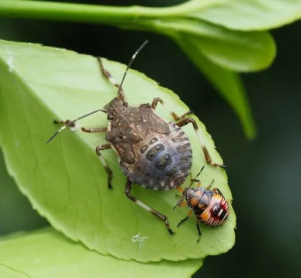

昆虫 · 动物界
茶翅蝽 Halyomorpha halys

原产于东亚的蝽类，体呈褐色、形似盾牌，受惊时能释放难闻气味，是入侵北美洲和欧洲的重要农业害虫。
- 分类
- 门节肢动物门纲昆虫纲目半翅目科蝽科属茶翅蝽属
- 栖息环境
- 果树、豆类、蔬菜、观赏植物及建筑物附近
- 地理分布
- 原产东亚，现入侵北美洲、欧洲等地
- 保护级别
- 暂无评估
物种志
茶翅蝽成虫体长 12–17 mm，体形呈盾状。它的体色为褐色夹杂灰黄色斑点，触角黑白相间，足和体缘有黑白斑纹；若虫体色多变，腹部有刺状突起；受惊时从胸部腺体释放带有臭味的液体。
茶翅蝽原产于东亚，包括中国、日本、朝鲜半岛，20 世纪末随货物贸易传入北美，随后扩散到欧洲，成为重要的入侵农业害虫。它以果实、豆类、蔬菜和观赏植物为食，用刺吸式口器吸食汁液，造成果实畸形；秋季成虫会成群飞入建筑物缝隙越冬，给居民带来困扰。茶翅蝽每年发生 1–2 代，雌虫将卵块产在叶背，若虫孵化后经五次蜕皮羽化。由于适应力强、缺乏有效天敌，其在北美和欧洲的种群迅速扩张。
形态与习性
- 食性果实、豆类、蔬菜和观赏植物的汁液
- 体长成虫 12–17 mm
- 形态体呈盾状，褐色带灰黄斑点
- 防御受惊时释放难闻气味的液体
- 繁殖一年 1–2 代，卵块产在叶背
- 入侵性20 世纪末传入北美，后扩散至欧洲
趣味知识
- 茶翅蝽受惊时会释放难闻的气味，因此也被称为“臭虫”。
- 它原产东亚，20 世纪末随贸易传入北美并扩散到欧洲。
- 秋季成虫会成群飞入建筑物缝隙中越冬。
- 茶翅蝽用刺吸式口器吸食果实汁液，造成果实畸形。